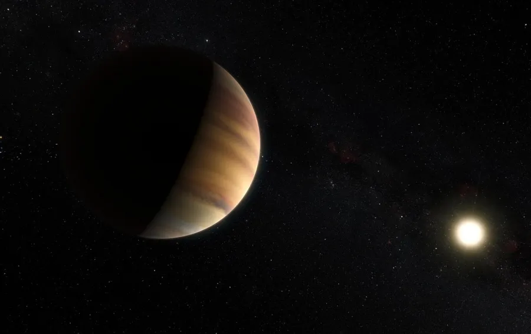

Oktober 1995
51 Pegasi b: erster Planet bei einem sonnenähnlichen Stern
Im Oktober 1995 gaben Michel Mayor und Didier Queloz die Entdeckung von 51 Pegasi b bekannt, des ersten Planeten bei einem sonnenähnlichen Stern. Sie fanden ihn am Observatoire de Haute-Provence in Südfrankreich. Der rund 50 Lichtjahre entfernte Gasriese gilt als Urtyp der „heißen Jupiter“: Planeten ähnlich groß und schwer wie Jupiter, die ihren Stern aber sehr eng umkreisen.
2015 wies das HARPS-Instrument der ESO erstmals spektroskopisch sichtbares Licht nach, das ein Exoplanet reflektiert – bei eben diesem Planeten. Daraus ergab sich etwa eine halbe Jupitermasse. Mayor und Queloz erhielten 2019 den Physik-Nobelpreis.
Quellen: Nobel Prize: "Press release: The Nobel Prize in Physics 2019", 08.10.2019; ESO: "First Detection of Reflected Visible Light from 51 Pegasi b", 22.04.2015